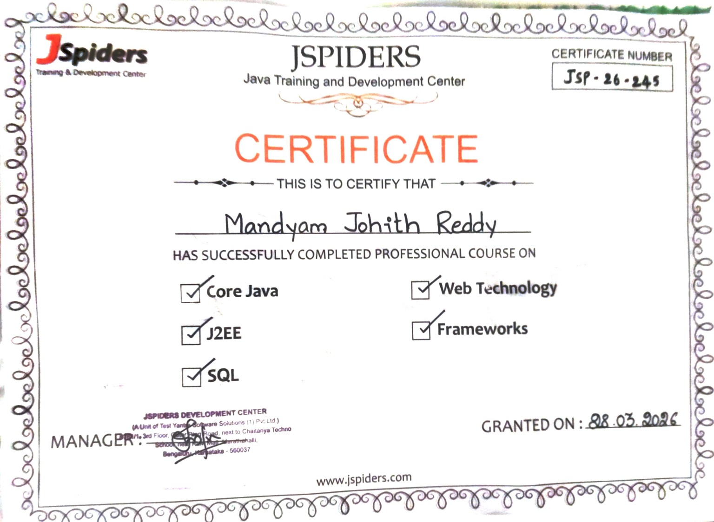
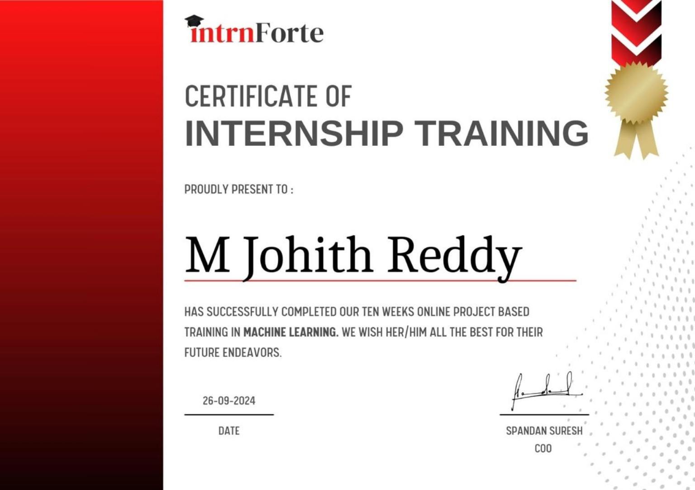
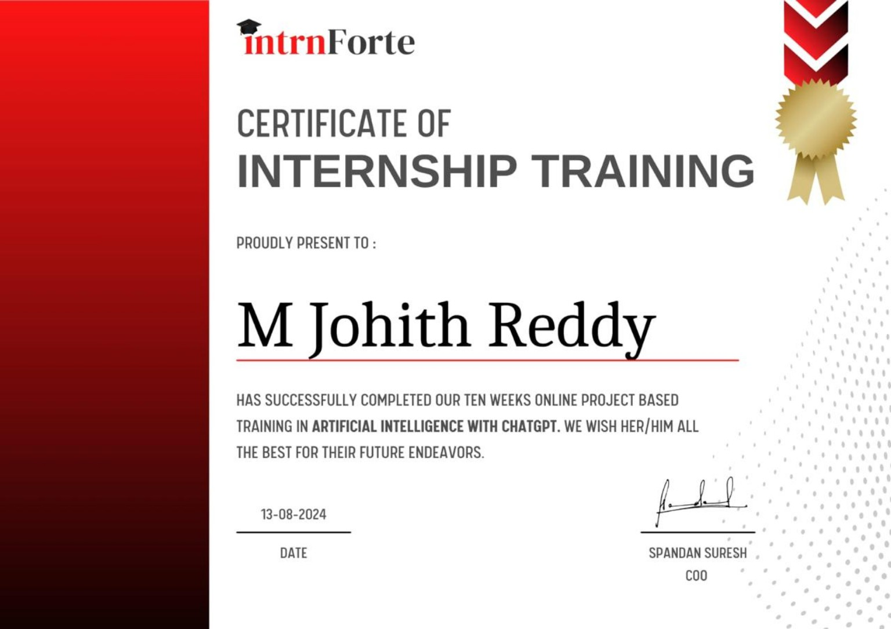
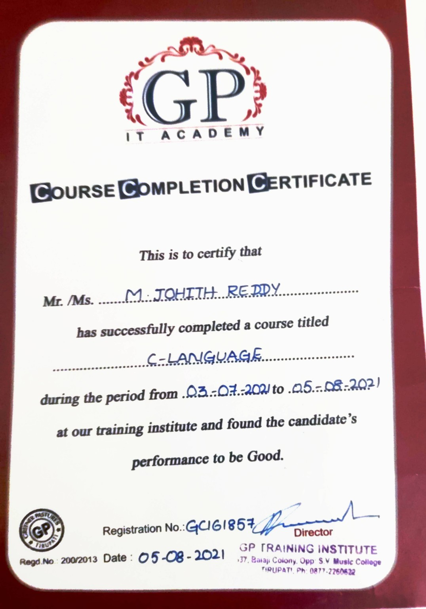
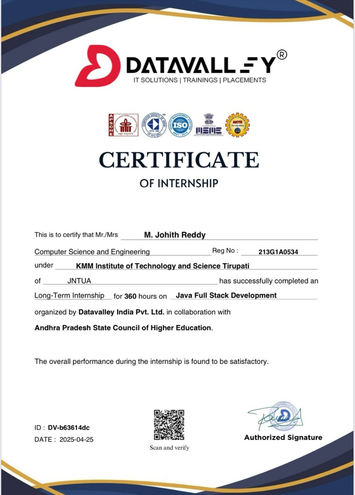
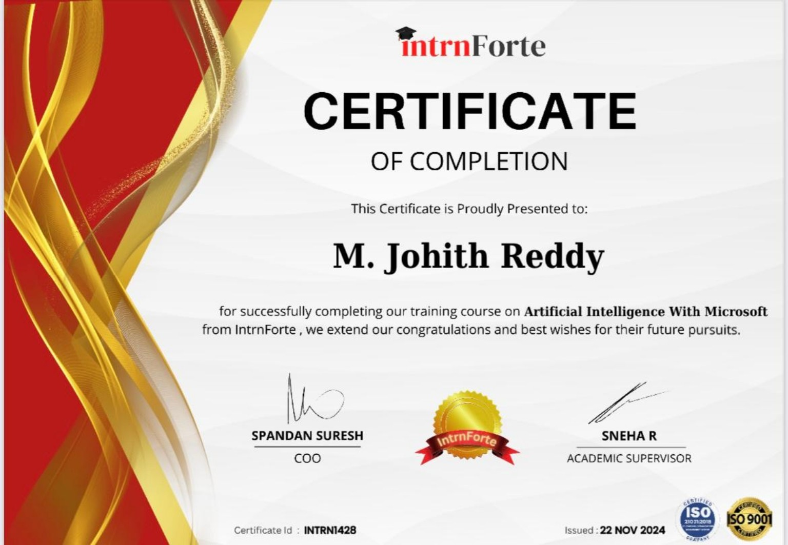
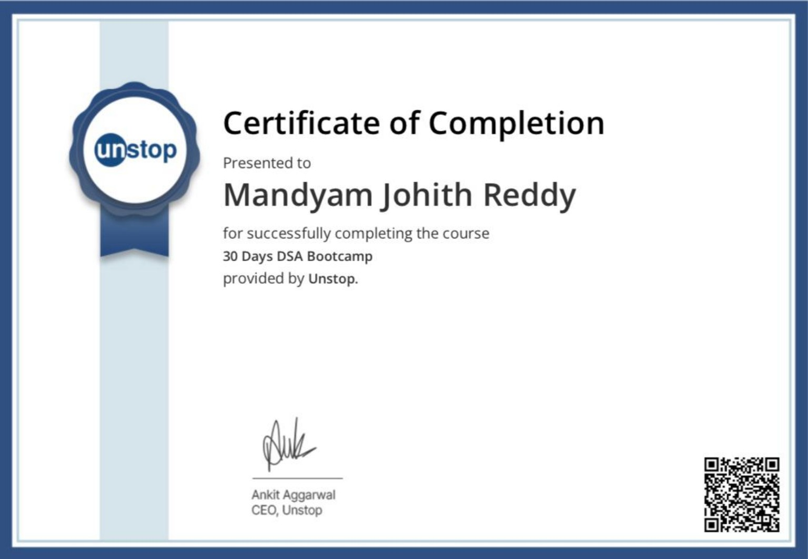
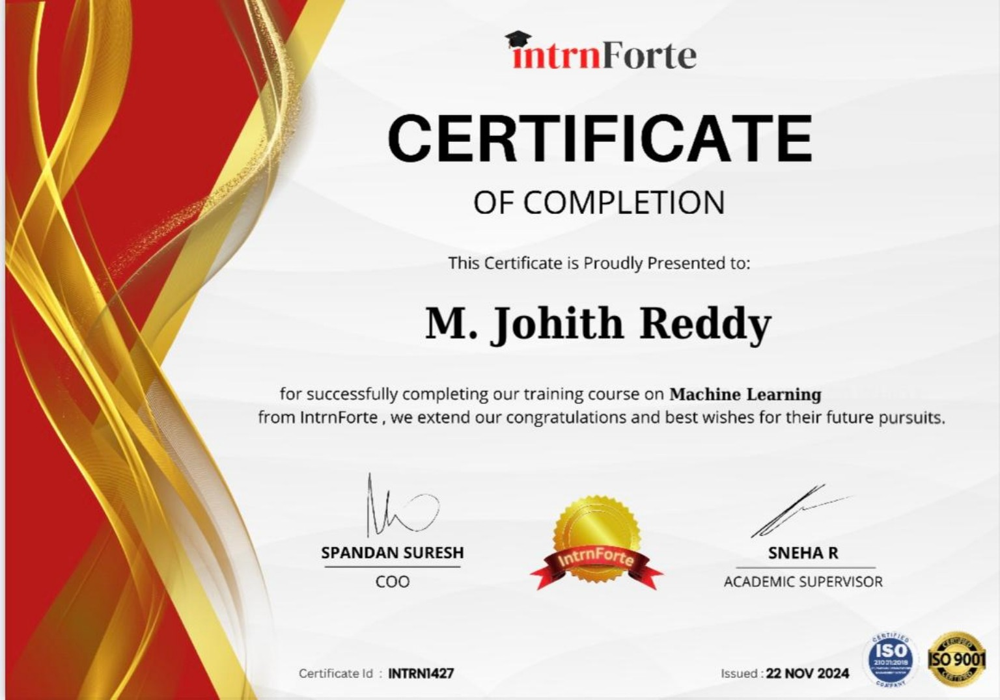

CREDENTIAL 01
Professional Java Course
JSpiders · 6-month professional Java training · Core Java · J2EE · SQL · Web Technology · Frameworks · Granted 28 Mar 2026
Visual gallery of the training and internship certificates supplied with the portfolio materials.

JSpiders · 6-month professional Java training · Core Java · J2EE · SQL · Web Technology · Frameworks · Granted 28 Mar 2026

IntrnForte · 10-week online project-based training · Completed 26 Sep 2024

IntrnForte · 10-week online project-based training · Completed 13 Aug 2024

GP IT Academy · C Language · 03 Jul 2021 — 05 Aug 2021

DataValley · 360-hour long-term internship · Certificate dated 25 Apr 2025

IntrnForte · Training course · Issued 22 Nov 2024

Unstop · Course completion

IntrnForte · Training course · Issued 22 Nov 2024